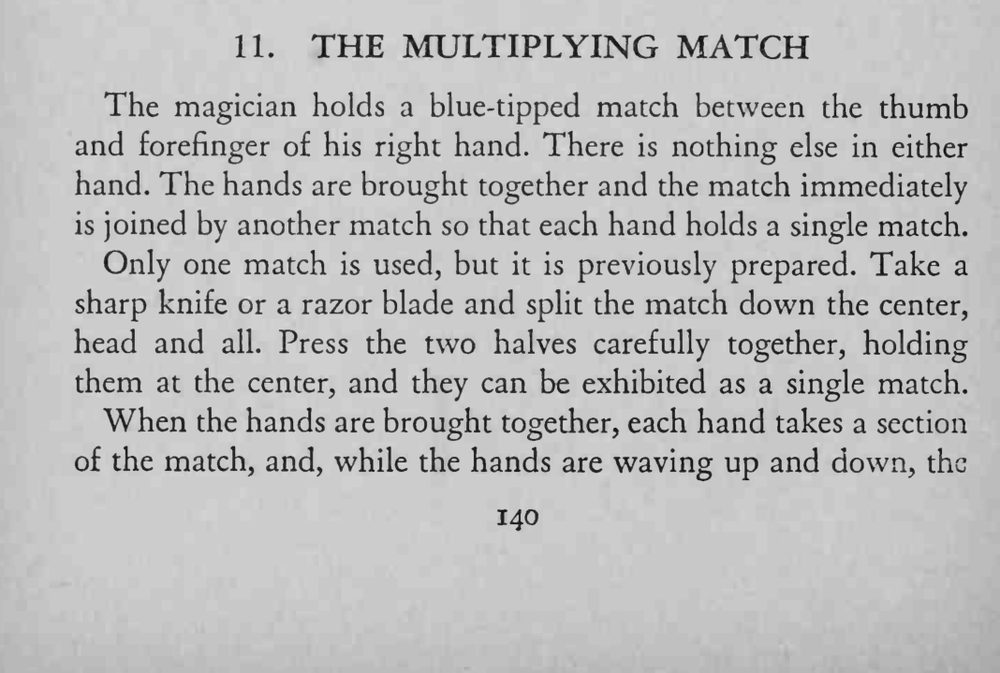
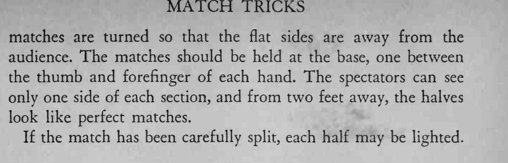

魔术师两手之间只捏着一根火柴，两手一合再分开，每只手里都有一根火柴。
两半要劈得对称、对得严丝合缝，从正面看不出拼合的缝。


The magician holds a blue-tipped match between the thumb and forefinger of his right hand. There is nothing else in either hand. The hands are brought together and the match immediately is joined by another match so that each hand holds a single match. Only one match is used, but it is previously prepared. Take a sharp knife or a razor blade and split the match down the center, head and all. Press the two halves carefully together, holding them at the center, and they can be exhibited as a single match. When the hands are brought together, each hand takes a section of the match, and, while the hands are waving up and down, the matches are turned so that the flat sides are away from the audience. The matches should be held at the base, one between the thumb and forefinger of each hand. The spectators can see only one side of each section, and from two feet away, the halves look like perfect matches. If the match has been carefully split, each half may be lighted.